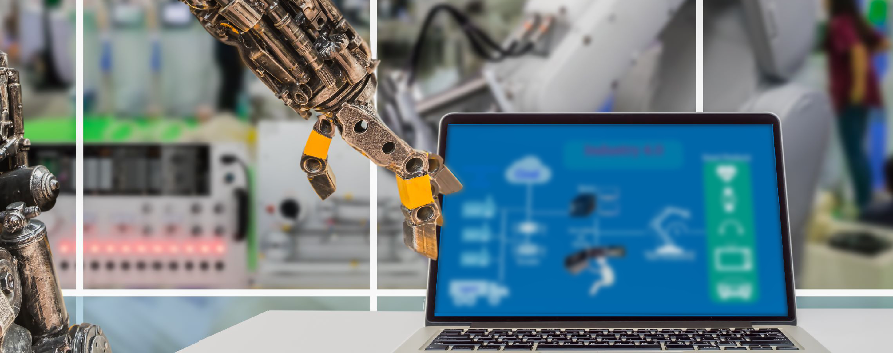

-
物流规划
广交物流依托在医药流通领域的资源配置、服务能力及创新服务模式等，可根据客户的需求，将第三方医药物流资源进行合理有效的统筹规划，提供医药供应链一体化解决方案，服务包括品牌业务推广、仓库布局规划、信息系统优化、多站式物流配送及运输线路规划等，并延伸到物流金融、货物保险及保税物流等增值服务，完成以满足客户需求为目标的全方位一体化物流规划。
-
物流运营

广交物流按照“分布式仓储，集约化配送”原则，以“多仓多点”合规流通的医药物流网络化经营模式及高效、安全、经济的医药物流服务体系，为医药客户提供全国多仓联动仓储配送服务。 分布式仓储：广交物流 “立足广东，面向全国”，以五大区域布局为依托向全国各省辐射建设若干符合GPS要求和市场需求的医药物流中心，目前已在用华南、华东和华北区域各医药物流中心，同时在建华中和西南医药物流中心。 集约化配送：广交物流以各大区域医药物流中心为始发点，实现以全国干线和区域配送相结合的高时效、低破损、可视化、集约化的配送网络体系。 专业化团队：广交物流具有专业、完善的质量管理体系和专业化运营团队，可实现客户全过程可追溯运营管控。 多元化服务：借助国家“粤港澳大湾区”发展机遇，利用境外仓、保税仓优势，为客户提供医药保税、医药跨境电商等业务。
-
物流科技
广交物流根据“多前端、多客户、多货主、多仓联动”的业务信息化需求，打造医药流通智慧物流服务的“药链云平台”。 “药链云WMS、TMS、OMS”能实现企业的业务流程数字化、线下业务线上化、库存集中化，提供业务全链条的数字化服务，打通客户前端电商销售平台、ERP系统、数据交互接口及后端物流等系统。 药链云OMS：配合医药企业搭建基于互联网的采销业务体系，实现线下业务线上化。 药链云中台：为医药企业构建以客户为中心的数字化平台，提供 “积木”式可重用微服务、海量数据分析与应用能力，实现客户业务数字化及库存集中化，提高企业业务的快速响应能力和规模化创新能力。 药链云WMS、TMS：可实现线上线下全渠道对海量商品与订单进行精益化、可视化物流运作管理。
-
智能设备集成
广交物流可提供医药供应链一体化解决方案，应用物流科技全面集成智能分拣设备、自动化输送设备、AGV货到人系统、AS/RS自动堆垛机、MDU移动发药设备等。 广交物流的智能科技工程，通过中央药房、无人药房、等智能设备和掌上药房云系统，提供 “送药上门”、“到机自提”的服务，满足客户降本增效的同时，实现品牌渠道拓展、拓客及客户粘性增加、24小时营销等多种新零售业务需求。
-
供应链金融

广交物流以客户需求为核心，以物流运营为基础，以物流科技为载体，构建物流、信息流、现金流无缝对接的医药金融服务平台，为客户提供安全、灵活、便捷的供应链金融服务，优化资金配置、降低产业成本。 仓单质押：银行及金融服务机构为广交物流的委托客户根据存储产品的情况提供授信，实施仓单质押或货物抵押，提供流动货物资金贷款的服务。 保函运输：银行及金融服务机构为广交物流客户委托运输配送的产品提供保函，客户可实现货到付款的服务。 商业保理：银行及金融服务机构对广交物流提供的第三方医药物流服务实施商业保理业务服务。 线上授信：银行及金融服务机构通过平台运营数据给予委托广交物流第三方医药物流服务客户提供授信。
-
电商平台
广交物流实现B2b，B2C多平台对接，整合客户企业各医药电商服务平台的线上线下资源，协助客户企业提供信息查询、技术创新、管理咨询、市场开拓、资源共享等服务，帮助客户企业实现降本增效。
低成本：帮助客户企业降低成本投入，专注市场营销投入。
高效率：多仓联动、路径优化，提升订单转化效率
多渠道：通过数据分析、查询和连通，促进客户资源在区域市场范围内的高效配置和共享利用，大数据布局“无人药房”，增加线上线下药品营销拓客渠道。 -
健康产业园

广交物流 “医药物流港”、“广州国际（大健康产业）供应链城市”项目，围绕大健康产业供应链招商，引进供应链技术、AI研发、区块链技术研究应用企业，医药智能分拣技术企业，金融服务相关产业及总部企业入住运营，大力发展粤港澳大湾区高端医疗健康服务，形成产品、资金、技术、信息等交互式流通，企业与市场、产业与金融、线上与线下深度融合的大格局，从而拉动广州乃至周边地区大健康产业实现跨越式发展。
- 1
- 2
- 3
- 4
- 5
- 6
- 7
广交物流按照“分布式仓储， 集约化配送”原则，以“多仓多点”合规流通的医药物流网络化经营模式及高效、安全、经济的医药物流服务体系， 为医药客户提供全国多仓联动仓储配送服务。
依托“药链云WMS、TMS、OMS”能实现企业的业务流程数字化、线下业务线上化、库存集中化，提供业务全链条的数字化服务，打通客户前端电商销售平台、ERP系统、数据交互接口及后端物流等系统。
广交物流按照“分布式仓储， 集约化配送”原则，以“多仓多点”合规流通的医药物流网络化经营模式及高效、安全、经济的医药物流服务体系， 为医药客户提供全国多仓联动仓储配送服务。
依托“药链云WMS、TMS、OMS”能实现企业的业务流程数字化、线下业务线上化、库存集中化，提供业务全链条的数字化服务，打通客户前端电商销售平台、ERP系统、数据交互接口及后端物流等系统。